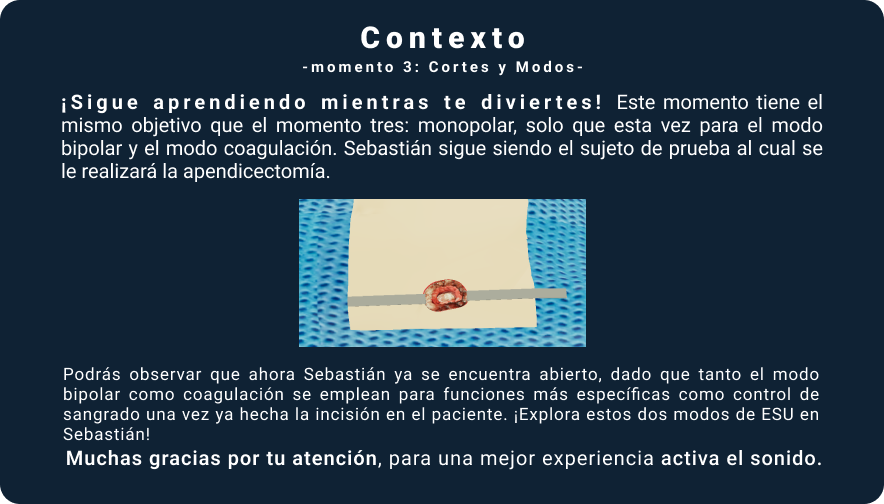
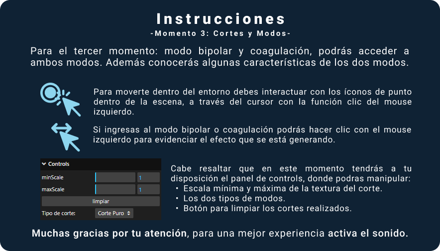
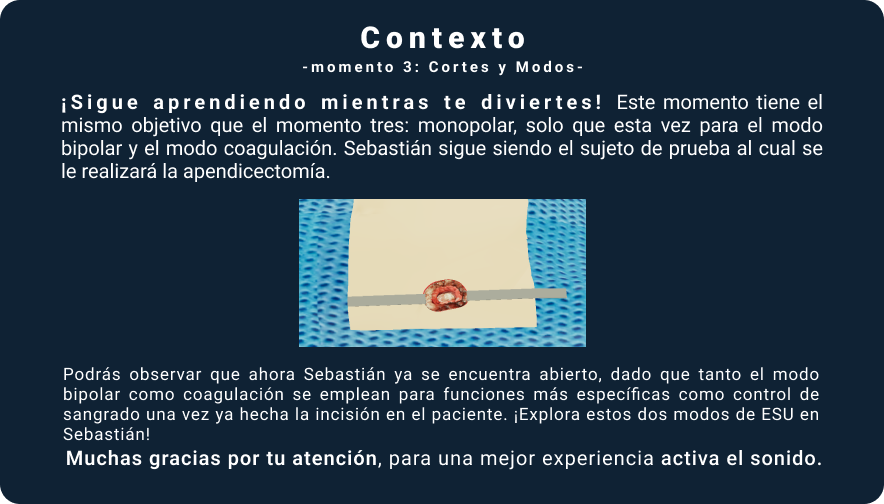
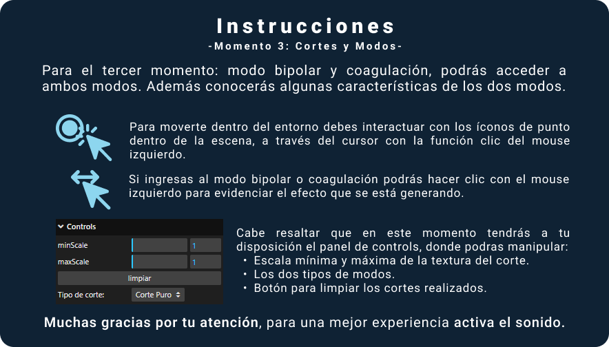

Recuerda que para el modo bipolar no se requiere el uso del electrodo de retorno, dado que la corriente circula por las puntas del electrodo activo.
Como el modo de coagulación hace parte del modo de uso monopolar, este procedimiento sí requiere el uso del electrodo de retorno.
 


